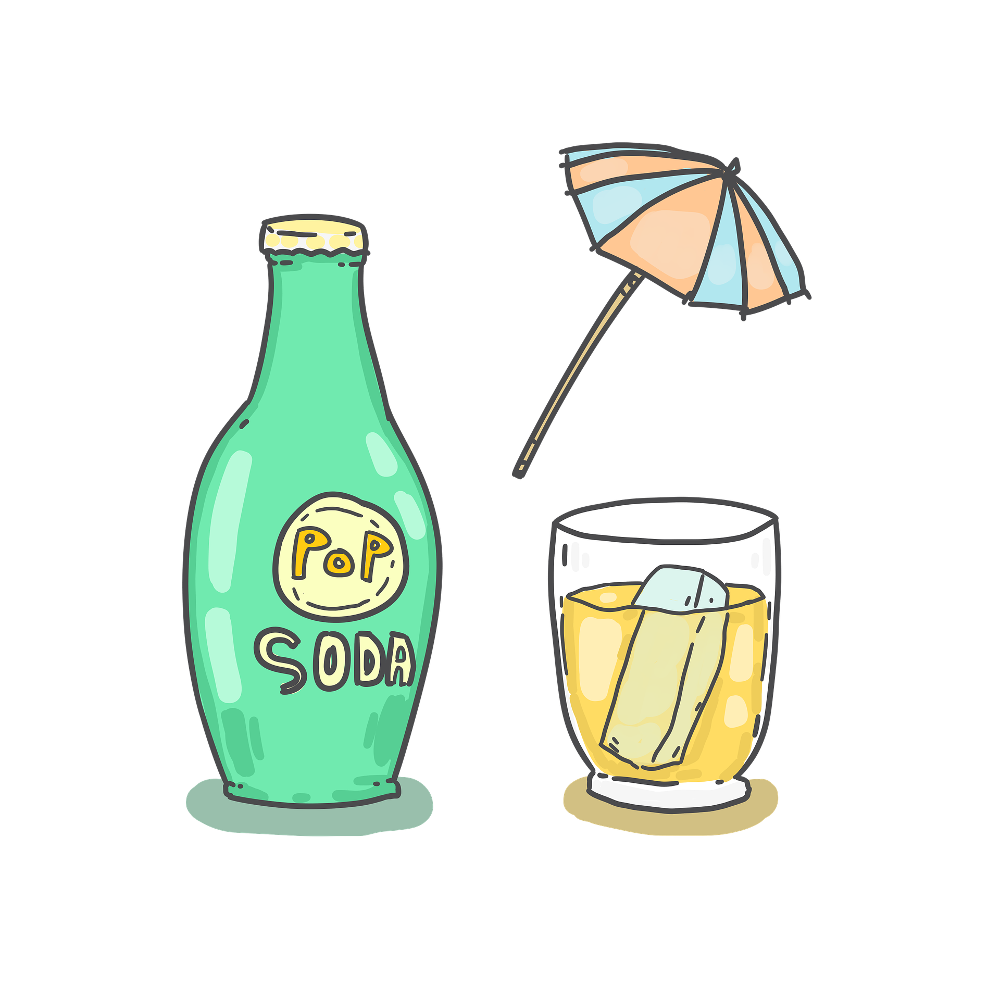

Pop Art is a relatively recent art form which originated in Britain in the 1950s and lasted till about the 1970s. One of the key traits of Pop-Art is its focus on the modern day. Similar to a rebellious teenager Pop-Art pays no attention to ancient history and traditions but rather lives in the moment
One of the more unique aspects of Pop-art was that it had a focus on everyday objects rather than more extravagant objects. As Pop-Art came into fashion after the second World War this practice of elevating everyday objects into something more wholesome and beautiful made the art form very popular.
